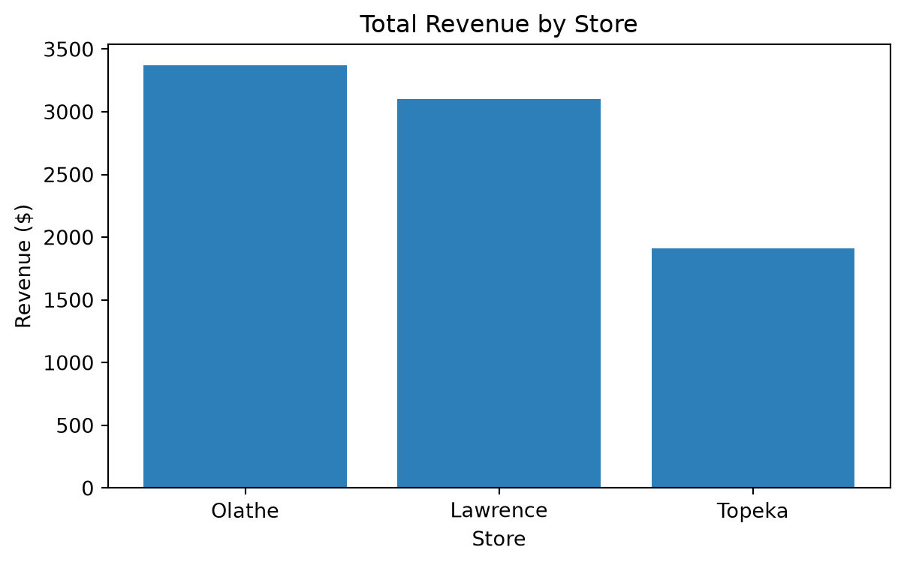
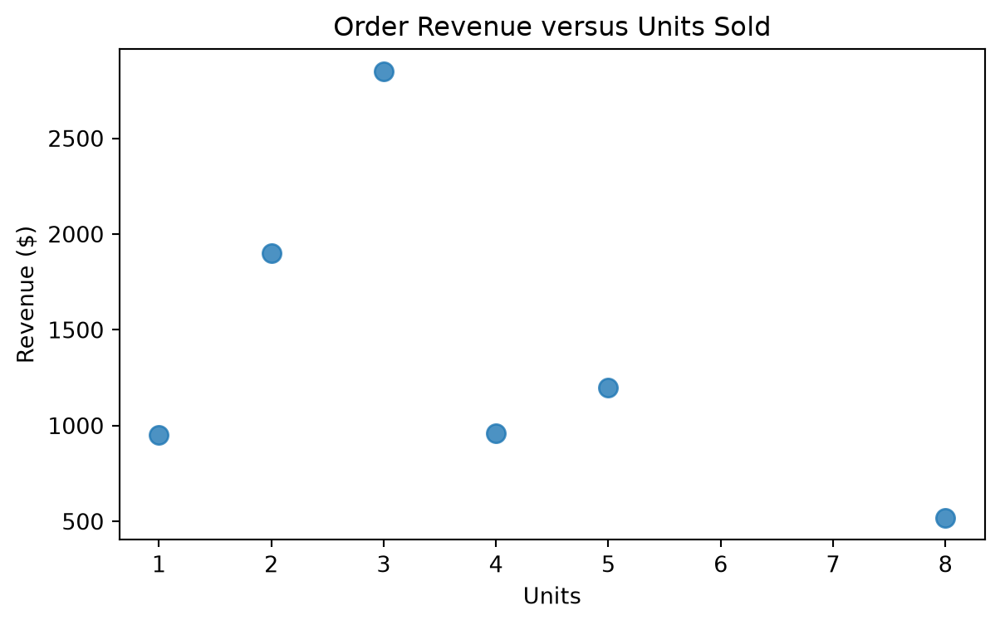

# RUN: Load the packages used in this lab.
import numpy as np
import pandas as pd
import matplotlib.pyplot as plt
print("Setup complete.")Setup complete.This lab introduces only the Python skills that we will reuse in later machine-learning labs. You are not expected to memorize every command. Focus on reading code, changing it carefully, running it, and checking whether the output makes sense.
By the end of this lab, you should be able to:
Use Shift+Enter to run the current cell and move to the next one.
Before starting:
Colab executes code in a temporary runtime. Variables exist only after the cell that creates them has been run. If the runtime restarts, run the notebook again from the beginning.
The first code cell loads the three packages used in this lab:
numpy for numerical arrays and calculations;pandas for table-shaped data;matplotlib for charts.# RUN: Load the packages used in this lab.
import numpy as np
import pandas as pd
import matplotlib.pyplot as plt
print("Setup complete.")Setup complete.A variable gives a name to a value. Python uses = to assign a value. The expression on the right is calculated first and then stored under the name on the left.
The Economic Order Quantity formula is
\[Q=\sqrt{\frac{2DK}{h}},\]
where \(D\) is annual demand, \(K\) is ordering cost, and \(h\) is holding cost. Notice how the Python expression follows the mathematical formula.
Useful operators include:
| Operation | Python |
|---|---|
| Addition | a + b |
| Subtraction | a - b |
| Multiplication | a * b |
| Division | a / b |
| Power | a ** b |
| Square root | np.sqrt(a) |
# RUN: Create variables and use them in calculations.
annual_demand = 5000
ordering_cost = 4
holding_cost = 0.5
eoq = np.sqrt(2 * annual_demand * ordering_cost / holding_cost)
print("Annual demand:", annual_demand)
print("Economic order quantity:", round(eoq, 2))Annual demand: 5000
Economic order quantity: 282.84A second store has annual demand of 3,000 units, ordering cost of $5, and holding cost of $0.50.
None with the three values.# PRACTICE 1: Replace None and complete the calculation.
demand_store_2 = None
ordering_cost_store_2 = None
holding_cost_store_2 = None
# eoq_store_2 = ...
# print(...)A Python list stores several values in order. Python begins counting positions at zero, so the first item is at position 0.
# RUN: Create and inspect a list.
store_names = ["Lawrence", "Topeka", "Olathe", "Wichita", "Salina"]
print("All stores:", store_names)
print("Number of stores:", len(store_names))
print("First store:", store_names[0]) # first element's index is 0, 2nd is 1,...
print("Last store:", store_names[-1])
print("Stores 2 through 4:", store_names[1:4]) # when subset with [x:y], it means x+1 to yAll stores: ['Lawrence', 'Topeka', 'Olathe', 'Wichita', 'Salina']
Number of stores: 5
First store: Lawrence
Last store: Salina
Stores 2 through 4: ['Topeka', 'Olathe', 'Wichita']Lists are flexible containers, but numerical analysis is usually easier with a NumPy array. Arrays allow us to apply the same calculation to every value at once.
# RUN: Vectorized calculation for five stores.
demand = np.array([5000, 3000, 3500, 6000, 4500])
ordering_costs = np.array([4, 5, 5, 3, 4])
holding_cost = 0.5
eoq_by_store = np.sqrt(2 * demand * ordering_costs / holding_cost)
print("Demand:", demand)
print("EOQ by store:", np.round(eoq_by_store, 2))
print("Average EOQ:", round(eoq_by_store.mean(), 2))
print("Largest EOQ:", round(eoq_by_store.max(), 2))Demand: [5000 3000 3500 6000 4500]
EOQ by store: [282.84 244.95 264.58 268.33 268.33]
Average EOQ: 265.8
Largest EOQ: 282.84We can select values by position or by a condition. A condition such as demand > 4000 produces True or False for each entry. Using that condition inside square brackets keeps only the matching values.
# RUN: Index and filter an array.
print("Second demand value:", demand[1])
print("First three demand values:", demand[:3])
print("Demand greater than 4,000:", demand[demand > 4000])
print("EOQ for stores with demand greater than 4,000:",
np.round(eoq_by_store[demand > 4000], 2))Second demand value: 3000
First three demand values: [5000 3000 3500]
Demand greater than 4,000: [5000 6000 4500]
EOQ for stores with demand greater than 4,000: [282.84 268.33 268.33]Using the eoq_by_store array:
np.sort(...) sorts from smallest to largest.# PRACTICE 2: Write four short expressions.
# 1. Third EOQ
# 2. EOQ values greater than 250
# 3. Minimum EOQ
# 4. EOQ values from largest to smallest (we didn't cover this one, but try to search for solution)A function packages a useful calculation so that we can reuse it. A function normally has:
# RUN: Define and call a reusable EOQ function.
def calculate_eoq(demand, ordering_cost, holding_cost=0.5):
result = np.sqrt(2 * demand * ordering_cost / holding_cost)
return result
lawrence_eoq = calculate_eoq(5000, 4)
topeka_eoq = calculate_eoq(3000, 5)
print("Lawrence EOQ:", round(lawrence_eoq, 2))
print("Topeka EOQ:", round(topeka_eoq, 2))Lawrence EOQ: 282.84
Topeka EOQ: 244.95An if statement lets a function make a decision. Only the indented code under the satisfied condition is run.
# RUN: Define a function that assigns a simple label.
def demand_category(value):
if value >= 5000:
return "High"
elif value >= 3500:
return "Medium"
else:
return "Low"
print(demand_category(6000))
print(demand_category(4200))
print(demand_category(3000))High
Medium
LowA for loop repeats an action. We use loops sparingly in data analysis because pandas and NumPy can often process an entire column or array at once, but you should be able to read a simple loop.
# RUN: Apply the function to each store using a loop.
for name, value in zip(store_names, demand):
print(name, "->", demand_category(value))Lawrence -> High
Topeka -> Low
Olathe -> Medium
Wichita -> High
Salina -> MediumWrite a function named shipping_fee(order_total) that returns:
0 when the order total is at least $100;8 otherwise.Test it with order totals of $75 and $120.
# PRACTICE 3: Complete the function and test it twice.
def shipping_fee(order_total):
# complete the following if/else statement.
if ...:
return ...
else:
return ...
# print(shipping_fee(75))
# print(shipping_fee(120))A pandas DataFrame is a table in which rows are observations and columns are variables. Most datasets used later in the course will be DataFrames.
The example below creates a small order table directly in Python. Later we will load a CSV file.
# RUN: Create a small DataFrame.
orders = pd.DataFrame({
"store": ["Lawrence", "Lawrence", "Topeka", "Olathe", "Topeka", "Olathe"],
"product": ["Laptop", "Monitor", "Laptop", "Keyboard", "Monitor", "Laptop"],
"units": [2, 5, 1, 8, 4, 3],
"unit_price": [950, 240, 950, 65, 240, 950]
})
orders| store | product | units | unit_price | |
|---|---|---|---|---|
| 0 | Lawrence | Laptop | 2 | 950 |
| 1 | Lawrence | Monitor | 5 | 240 |
| 2 | Topeka | Laptop | 1 | 950 |
| 3 | Olathe | Keyboard | 8 | 65 |
| 4 | Topeka | Monitor | 4 | 240 |
| 5 | Olathe | Laptop | 3 | 950 |
Common first steps are:
df.head() to preview rows;df.shape to get (rows, columns);df.columns to see variable names;df.dtypes to inspect data types;df.describe() to summarize numeric columns.# RUN: Inspect the orders data.
print("Shape:", orders.shape)
print("Columns:", orders.columns.tolist())
display(orders.head())
display(orders.describe())Shape: (6, 4)
Columns: ['store', 'product', 'units', 'unit_price']| store | product | units | unit_price | |
|---|---|---|---|---|
| 0 | Lawrence | Laptop | 2 | 950 |
| 1 | Lawrence | Monitor | 5 | 240 |
| 2 | Topeka | Laptop | 1 | 950 |
| 3 | Olathe | Keyboard | 8 | 65 |
| 4 | Topeka | Monitor | 4 | 240 |
| units | unit_price | |
|---|---|---|
| count | 6.000000 | 6.000000 |
| mean | 3.833333 | 565.833333 |
| std | 2.483277 | 425.657335 |
| min | 1.000000 | 65.000000 |
| 25% | 2.250000 | 240.000000 |
| 50% | 3.500000 | 595.000000 |
| 75% | 4.750000 | 950.000000 |
| max | 8.000000 | 950.000000 |
Use one pair of brackets for a single column and a list of names for several columns. Use .loc[condition, columns] to filter rows and select columns together.
# RUN: Select columns and filter rows.
print("Units column:")
display(orders["units"])
print("Product and unit price:")
display(orders[["product", "unit_price"]])
print("Orders with at least 3 units:")
display(orders.loc[orders["units"] >= 3, ["store", "product", "units"]])Units column:0 2
1 5
2 1
3 8
4 4
5 3
Name: units, dtype: int64Product and unit price:| product | unit_price | |
|---|---|---|
| 0 | Laptop | 950 |
| 1 | Monitor | 240 |
| 2 | Laptop | 950 |
| 3 | Keyboard | 65 |
| 4 | Monitor | 240 |
| 5 | Laptop | 950 |
Orders with at least 3 units:| store | product | units | |
|---|---|---|---|
| 1 | Lawrence | Monitor | 5 |
| 3 | Olathe | Keyboard | 8 |
| 4 | Topeka | Monitor | 4 |
| 5 | Olathe | Laptop | 3 |
New variables are often created from existing columns. A grouped summary answers questions such as “What are total sales by store?”
# RUN: Create revenue and summarize by store.
orders["revenue"] = orders["units"] * orders["unit_price"]
store_summary = (
orders.groupby("store", as_index=False)
.agg(total_units=("units", "sum"),
total_revenue=("revenue", "sum"))
.sort_values("total_revenue", ascending=False)
)
display(orders)
display(store_summary)| store | product | units | unit_price | revenue | |
|---|---|---|---|---|---|
| 0 | Lawrence | Laptop | 2 | 950 | 1900 |
| 1 | Lawrence | Monitor | 5 | 240 | 1200 |
| 2 | Topeka | Laptop | 1 | 950 | 950 |
| 3 | Olathe | Keyboard | 8 | 65 | 520 |
| 4 | Topeka | Monitor | 4 | 240 | 960 |
| 5 | Olathe | Laptop | 3 | 950 | 2850 |
| store | total_units | total_revenue | |
|---|---|---|---|
| 1 | Olathe | 11 | 3370 |
| 0 | Lawrence | 7 | 3100 |
| 2 | Topeka | 5 | 1910 |
Using orders:
# PRACTICE 4
# 1. Laptop orders
# 2. Average unit price
# 3-4. Total revenue by product, sorted from highest to lowestWe introduce some basic plots here. We will see more advanced visualizations later as needed.
# RUN: Bar chart of total revenue by store.
plt.figure(figsize=(7, 4))
plt.bar(store_summary["store"], store_summary["total_revenue"], color="#2C7FB8")
plt.title("Total Revenue by Store")
plt.xlabel("Store")
plt.ylabel("Revenue ($)")
plt.show()
# RUN: Scatter plot of units and revenue.
plt.figure(figsize=(7, 4))
plt.scatter(orders["units"], orders["revenue"], s=70, alpha=0.8)
plt.title("Order Revenue versus Units Sold")
plt.xlabel("Units")
plt.ylabel("Revenue ($)")
plt.show()
Create a bar chart showing total revenue by product. Include:
# PRACTICE 5: Create the chart.You do not need to memorize the syntax from this lab. You should be able to recognize the basic workflow:
load packages
→ load or create data
→ inspect the data
→ select or create variables
→ filter observations
→ summarize
→ visualize
→ interpret